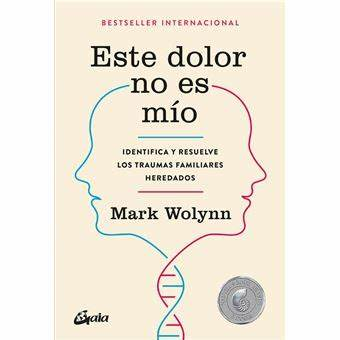
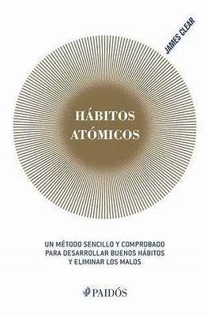
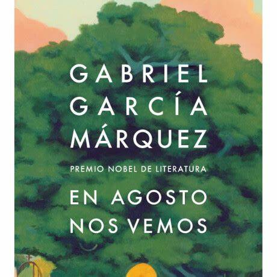

Este Dolor No Es Mio

Un libro que explora cómo el dolor y los traumas pueden transmitirse
de generación en generación, y cómo reconocer y sanar esas heridas
heredadas.
Más información
Valoración: ★★★★★
Recomendado para: Personas interesadas en comprender y sanar patrones
emocionales heredados, terapeutas, psicólogos y quienes buscan
crecimiento personal.
Hábitos Atómicos

Un libro sobre cómo pequeños cambios en los hábitos diarios pueden
conducir a grandes mejoras en la vida personal y profesional.
Más información
Valoración: ★★★
Recomendado para: Personas interesadas en el desarrollo personal, la
formación de hábitos positivos y quienes buscan mejorar su
productividad y bienestar.
En agosto nos vemos

La última novela de Gabriel García Márquez, publicada póstumamente,
narra la historia de una mujer que cada agosto visita la tumba de su
madre en una isla del Caribe, explorando temas de memoria, amor y
reencuentro.
Más información
Valoración: ★★★★★
Recomendado para: Lectores que disfrutan de la literatura
latinoamericana, admiradores de Gabriel García Márquez y quienes
buscan historias profundas sobre la vida, el amor y la memoria.